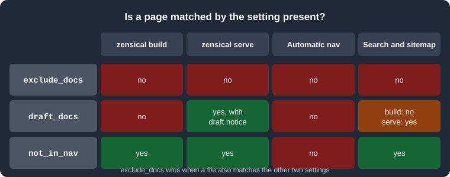

Configuration
|
This content was generated with the assistance of AI and should be verified against the official documentation before being relied on in production. |
This page was written against Zensical 0.0.72 (the latest release on PyPI, published 2026-10-23, Alpha status) and checked on 2026-10-26. Zensical announced a 0.1.0 release line for 2026-11-05, so key names and limits below may change; see Roadmap and Upgrade Policy. All examples were run with that version against a small Pocket Units documentation tree.
What configures a Zensical project
A Zensical project is configured by one file at the project root, normally zensical.toml, which zensical new
generates with commented examples (see Installation and CLI).
Zensical can also read an existing mkdocs.yml, which makes migration gradual: the same project builds with either
mkdocs build or zensical build (see
Migrating from Material for MkDocs).
The two formats describe the same settings. The official configuration reference shows every setting twice, once for
zensical.toml and once for mkdocs.yml, and recommends the mkdocs.yml form while a project must keep working with
both builders. This page does the same.
Every setting of zensical.toml currently lives in a single table declared on the first line:
[project]The documentation says that further tables may be introduced later and that settings may then move out of [project],
with automatic refactorings promised so that no manual migration is needed. Nested settings use dotted tables such as
[project.theme], [project.extra] or [project.plugins.mkdocstrings.handlers.python].
Which file wins
When a directory contains both zensical.toml and mkdocs.yml, a plain zensical build read zensical.toml in the
test run: the page title came out as the site_name of the TOML file, and its site_dir was used. The option
-f/--config-file selects a file explicitly, and with no config file in the current folder the command stops with
Error: No config file found in the current folder. The official documentation does not state this precedence, so pass
-f when both files exist and the choice matters.
The project scope at a glance
The settings below are the ones the basics page of the configuration reference lists. Each row gives the TOML key, the
mkdocs.yml key, and what the setting does.
zensical.toml |
mkdocs.yml |
Purpose |
|---|---|---|
|
|
Required. The name of the site, used in the HTML head and in page headers. |
|
|
Canonical URL of the site. Set it unless you build for offline use. |
|
|
Fallback description in the HTML head for pages without their own metadata. |
|
|
Author, written to the HTML head. |
|
|
Notice inserted in the footer; plain text or an HTML fragment. |
|
|
Directory with the source files. Default |
|
|
Directory the site is written to. Default |
|
|
Directory style URLs (default |
|
|
Files left out of both build and preview. |
|
|
Files left out of the build but shown in preview. |
|
|
Pages built and searchable but absent from the automatic navigation. |
|
|
Address and port of the preview server. Default |
|
|
Extra paths monitored for changes during preview. |
|
|
Arbitrary key/value pairs for templates. |
Other keys appear in the file that zensical new writes, for instance nav, repo_url, repo_name, edit_uri,
extra_css, extra_javascript and the [project.theme] table. They are covered on their own pages:
Navigation,
Theming and Customization and
Blog, Tags and Plugins.
Syntax differences between TOML and YAML
The translation from mkdocs.yml to zensical.toml is mechanical, but a few shapes differ:
-
Scalars are quoted strings in TOML (
site_name = "Pocket Units"), plain scalars in YAML. -
Nested mappings become dotted tables:
extra:with children turns into[project.extra]. -
A navigation list of one-key mappings becomes an array of inline tables:
nav = [{ "Home" = "index.md" }]. -
The three file pattern settings (
exclude_docs,draft_docs,not_in_nav) are multi-line strings in both formats: a YAML block scalar (|) inmkdocs.ymland a triple quoted string in TOML. A TOML array is rejected (see File patterns).
The two files below configure the same Pocket Units site:
[project]
site_name = "Pocket Units"
site_url = "https://example.org/pocket-units/"
site_description = "A tiny units-conversion library."
docs_dir = "docs"
site_dir = "public"
exclude_docs = """
/private/
*.tmp
"""
draft_docs = """
/drafts/
*.draft.md
"""
not_in_nav = """
/internal/
"""site_name: Pocket Units
site_url: https://example.org/pocket-units/
site_description: A tiny units-conversion library.
docs_dir: docs
site_dir: public
exclude_docs: |
/private/
*.tmp
draft_docs: |
/drafts/
*.draft.md
not_in_nav: |
/internal/Source: Zensical docs: Basics
Both files built the same four pages with zensical build:
Build started
No issues found
Build finished in 0.28sRequired and unknown keys behave as follows in 0.0.72:
-
Omitting
site_namestops the build withError: Missing required setting: site_name. -
A key Zensical does not know (a made-up
bogus_keyin[project]) was accepted silently, as was a file without a[project]table. Typos in top-level keys therefore do not produce an error, so check the output instead of trusting a green build.
site_url and why it matters
site_url is the canonical URL of the published site. Zensical writes it into the HTML head as the canonical link,
uses it to build the absolute URLs of the sitemap, and uses its path as the base path of the preview server. The
documentation says to set it unless you build for offline use.
[project]
site_name = "Pocket Units"
site_url = "https://example.org/pocket-units/"Source: Zensical docs: Basics
With that value, the build of guides/convert.md produced a canonical link of
https://example.org/pocket-units/guides/convert/ and a sitemap.xml whose <loc> entries all start with
https://example.org/pocket-units/. Two consequences are worth knowing:
-
When the site is hosted below a path, as on GitHub Pages project sites (
https://user.github.io/repo/), the path must be part ofsite_url. Otherwise canonical links and sitemap entries point to the wrong place. -
zensical servemounts the site under the path ofsite_url. With the value above the preview was served athttp://localhost:8000/pocket-units/, while a request for/answered with a redirect (HTTP 302) to that path. Use a localsite_urlor an empty-path URL while developing if that is inconvenient.
When use_directory_urls is false, which Zensical also sets automatically when building for offline use, the
canonical link ends in the file name (.../guides/convert.html) and the pages are written as convert.html instead of
convert/index.html.
docs_dir and site_dir
docs_dir is the directory with the source Markdown files and assets, and site_dir is where the generated site is
written. Both must be relative paths and are resolved relative to the configuration file, not the current directory.
[project]
site_name = "Pocket Units"
docs_dir = "docs"
site_dir = "public"Source: Zensical docs: Basics
In the test run:
-
With
site_dir = "public", the site,search.jsonandsitemap.xmlwere written topublic/. The default issite, which is also the path that the generated GitHub Pages workflow uploads, so change both together if you rename it (see Validation and Publishing). -
A
docs_dirthat does not exist stops the build withError: Docs directory does not exist:followed by the resolved path. -
An absolute path outside the project is refused:
Error: docs_dir must be within project rootandError: site_dir must be within project root. -
The command line option
--site-dirof MkDocs is not supported. Setsite_dirin the file instead.
The official reference states that docs_dir cannot be set to . (a temporary limitation, with the advice to keep the
sources in a subdirectory such as docs). Version 0.0.72 did build with docs_dir = ".", but it then treated the whole
project as documentation: the configuration files, the Python package and previous output were copied into the site
directory. Treat that as unsupported behaviour and keep a dedicated directory.
Keep site_dir out of docs_dir, and add it to .gitignore. A leftover generated site inside the source tree would be
processed as content. If output looks stale after an upgrade, zensical build --clean clears the cache.
File patterns
exclude_docs, draft_docs and not_in_nav select files with the same pattern syntax. The value must be a single
string with one pattern per line; a TOML array is rejected with Error: 'exclude_docs' must be a multiline string.
Patterns follow .gitignore rules and are resolved relative to docs_dir:
| Pattern | Matches |
|---|---|
|
Only that file at the root of |
|
A file of that name at any depth, so also |
|
A directory of that name, at any depth, with its contents (a trailing slash selects directories). |
|
Wildcards: every Markdown file. |
|
Markdown files at any depth below |
|
A leading |
|
Blank lines and lines starting with |
Patterns are evaluated in order and the last matching pattern decides. Negation only works inside one setting: an
exclude_docs match cannot be reversed by a negated not_in_nav pattern. The patterns apply to Markdown pages and also
to other files in docs_dir, such as images, which is how assets used only by drafts can be kept out of the build.
The test tree used for the next sections is:
docs/
index.md
guides/convert.md
guides/notes.draft.md
drafts/wip.md
private/plans.md
internal/changelog.md
scratch.tmp
.hidden.md
The matrix summarises the three settings: a page matched by exclude_docs disappears everywhere, a draft is only
dropped from the built site, and a page in not_in_nav is kept everywhere except the automatic navigation.
exclude_docs
exclude_docs removes files from both zensical build and zensical serve. A page matched here cannot be opened, is not
searched and is not in the sitemap.
[project]
exclude_docs = """
/private/
*.tmp
"""Source: Zensical docs: Basics
The build wrote index.html, guides/convert/index.html and internal/changelog/index.html (plus 404.html), and
neither private/plans/ nor scratch.tmp existed in public/. During zensical serve, a request for /private/plans/
answered HTTP 404.
Three kinds of file are excluded by default, before your patterns are applied: dotfiles, files inside dot directories,
and the top-level templates/ directory. Reverse a default with !:
[project]
exclude_docs = """
/private/
*.tmp
!.*
"""Source: Zensical docs: Basics
With !.* added, .hidden.md was built to public/.hidden/index.html. Use this for files such as a .well-known
folder, and remember that dot directories you do not want published (for example .git copies or editor folders) are
then no longer protected.
Because the pattern list is replaced rather than extended, every path that must stay hidden has to remain listed.
draft_docs
draft_docs marks work in progress. Matched files are left out of zensical build but included in zensical serve,
so authors can preview them while the published site stays clean. No files are drafts by default.
[project]
draft_docs = """
/drafts/
*.draft.md
"""Source: Zensical docs: Basics
Observed behaviour:
-
zensical buildproduced nodrafts/orguides/notes.draft/output. -
Under
zensical serve,drafts/wip/andguides/notes.draft/returned HTTP 200. The served page contained a draft marker with the title text "This page will not be included in the built site.", and the generatedsearch.jsonandsitemap.xmllisted the drafts in that preview. -
The drafts were not listed in the automatically generated navigation, even during preview. Open them by URL, or add them to an explicit
navfor the preview (see Navigation). -
The patterns also apply to assets, so an image referenced only by drafts can be matched by
draft_docsto keep it out of the built site.
A file matched by both exclude_docs and draft_docs is excluded, as the next section explains.
not_in_nav
not_in_nav omits pages from the automatically generated navigation while still building them. Such pages stay in
search results and in the sitemap, which makes the setting suitable for changelogs, legal pages or landing pages that
are reached by direct links.
[project]
not_in_nav = """
/internal/
changelog.md
"""Source: Zensical docs: Basics
In the test run, internal/changelog/index.html was built, appeared in search.json and sitemap.xml, and was absent
from the navigation of index.html. Two limits are documented: a matched page can still be added to an explicit nav
by name, and the setting is not applied to navigation generated by the awesome-nav plugin.
Precedence between the three settings
Files matched by exclude_docs are excluded even if draft_docs or not_in_nav also match them. The table
summarises what each setting changes for a matched page.
| Setting | zensical build |
zensical serve |
Automatic navigation | Search and sitemap |
|---|---|---|---|---|
|
absent |
absent |
absent |
absent |
|
absent |
present, with draft marker |
absent |
present only in preview |
|
present |
present |
absent |
present |
Other project settings
The remaining settings of the basics page are short:
-
site_description,site_authorandcopyright: metadata and footer text. With them set, the test page containedname="description" content="A tiny units-conversion library."andname="author"in its head.copyrightaccepts an HTML fragment such as© 2026 Pocket Units contributors. -
use_directory_urls:true(default) writesguides/convert/index.htmland serves it as/guides/convert/;falsewritesguides/convert.html. MkDocs'--use-directory-urlscommand line flag is not supported; set the key. -
dev_addr: address and port forzensical serve, defaultlocalhost:8000. The command line option-a/--dev-addr <IP:PORT>overrides it for a single run (zensical serve -a localhost:8123served the site there). -
watch: extra files or directories (relative to the configuration file) whose change triggers a full rebuild. Everything indocs_dir, theme files, snippet and macro include paths and thepathsof the mkdocstrings compatibility extension are watched without configuration. Symbolic links are followed only when their targets are inside a watched directory, so add the directory of an outside target towatch. -
[project.extra]: free-form values for templates. They are only used if you override templates (see Theming and Customization).
[project]
site_name = "Pocket Units"
site_url = "https://example.org/pocket-units/"
site_author = "Pocket Units contributors"
copyright = "© 2026 Pocket Units contributors"
use_directory_urls = false
dev_addr = "localhost:3000"
watch = ["pocket_units"]
[project.extra]
library_version = "0.3.0"Source: Zensical docs: Basics
This file built without issues; the page canonical link then ended in guides/convert.html. The dev_addr and
library_version values are only observable through the preview server and a template, which this run did not check.
Pitfalls and version notes
-
docs_dirset to.is documented as unsupported (and 0.0.72 mixes project files into the site); use a subdirectory. -
The three pattern settings take a multi-line string, not a list. Mixing styles copied from other tools gives the
must be a multiline stringerror. -
exclude_docsalways wins overdraft_docsandnot_in_nav, and a!rule never crosses from one setting to another. -
Patterns are anchored to
docs_dir, not to the project root. After changingdocs_dir, review leading slashes. -
Settings of the
mkdocs.ymlthat Zensical does not support yet are ignored rather than rejected; the official list of unsupported settings currently nameshooks. See Migrating from Material for MkDocs. -
Keep
site_urlaccurate: it affects canonical links, sitemap and the preview base path. -
The
[project]table is expected to be split into further scopes in later releases, with automatic refactorings.